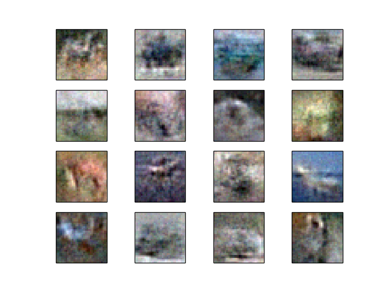

Generative networks for random CIFAR images¶
This demo of a CIFAR generator is based on the work of I. Goodfellow, J. Pouget-Abadie, M. Mirza, B. Xu, D. Warde-Farley, S. Ozair, A. Courville, Y.Bengio. Generative Adversarial Networks, June 2014.
The generators trained as part of the published experiment have been wrapped in sklearn-theano, and can easily be used to fetch an arbitrary number of plausible CIFAR images.
Additionally, this example also shows how to make an automatically updating plot with the ‘TkAgg’ backend to matplotlib.
Script output:
Iteration 0
Iteration 1
Iteration 2
Iteration 3
Iteration 4
Iteration 5
Iteration 6
Iteration 7
Iteration 8
Iteration 9
Iteration 10
Iteration 11
Iteration 12
Iteration 13
Iteration 14
Iteration 15
Iteration 16
Iteration 17
Iteration 18
Iteration 19
Iteration 20
Iteration 21
Iteration 22
Iteration 23
Iteration 24
Iteration 25
Iteration 26
Iteration 27
Iteration 28
Iteration 29
Iteration 30
Iteration 31
Iteration 32
Iteration 33
Iteration 34
Iteration 35
Iteration 36
Iteration 37
Iteration 38
Iteration 39
Iteration 40
Iteration 41
Iteration 42
Iteration 43
Iteration 44
Iteration 45
Iteration 46
Iteration 47
Iteration 48
Iteration 49
Iteration 50
Iteration 51
Iteration 52
Iteration 53
Iteration 54
Iteration 55
Iteration 56
Iteration 57
Iteration 58
Iteration 59
Iteration 60
Iteration 61
Iteration 62
Iteration 63
Iteration 64
Iteration 65
Iteration 66
Iteration 67
Iteration 68
Iteration 69
Iteration 70
Iteration 71
Iteration 72
Iteration 73
Iteration 74
Iteration 75
Iteration 76
Iteration 77
Iteration 78
Iteration 79
Iteration 80
Iteration 81
Iteration 82
Iteration 83
Iteration 84
Iteration 85
Iteration 86
Iteration 87
Iteration 88
Iteration 89
Iteration 90
Iteration 91
Iteration 92
Iteration 93
Iteration 94
Iteration 95
Iteration 96
Iteration 97
Iteration 98
Iteration 99
Python source code: plot_cifar_fully_connected_generator.py
import matplotlib
matplotlib.use('TkAgg')
import matplotlib.pyplot as plt
import numpy as np
import time
from sklearn_theano.datasets import fetch_cifar_fully_connected_generated
X = fetch_cifar_fully_connected_generated(n_samples=1600, random_state=1999)
# plotting based on
# http://stackoverflow.com/questions/4098131/matplotlib-update-a-plot
num_updates = len(X) // 16
f, axarr = plt.subplots(4, 4)
objarr = np.empty_like(axarr)
for n, ax in enumerate(axarr.flat):
objarr.flat[n] = ax.imshow(X[n], interpolation='nearest')
ax.get_xaxis().set_ticks([])
ax.get_yaxis().set_ticks([])
plt.show(block=False)
for i in range(num_updates):
for n, obj in enumerate(objarr.flat):
obj.set_data(X[i * len(objarr.flat) + n])
plt.draw()
time.sleep(.08)
print("Iteration %i" % i)
plt.show()
Total running time of the example: 28.61 seconds ( 0 minutes 28.61 seconds)